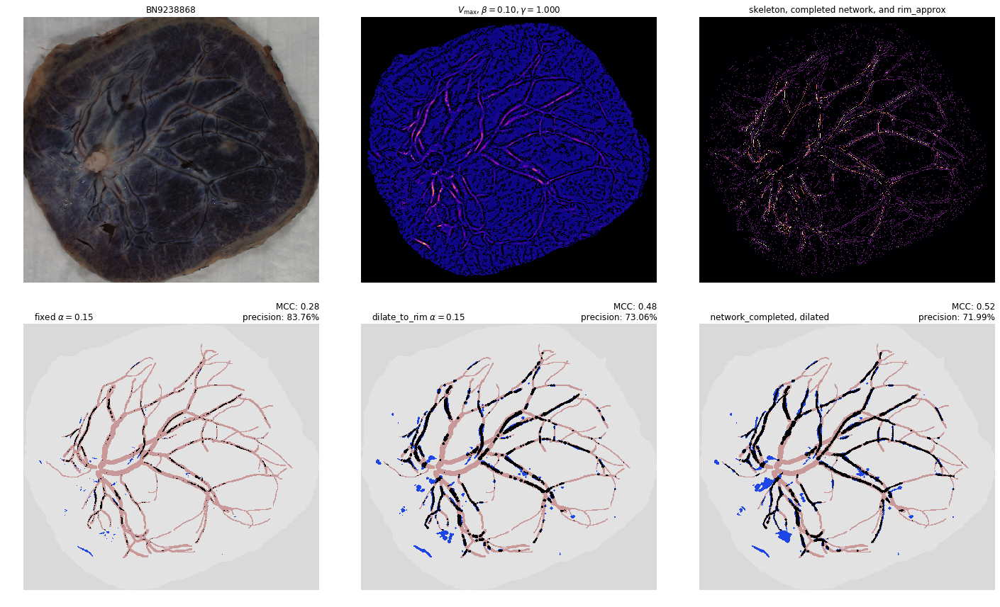

In [28]: run network_completion.py
/usr/lib/python3.7/site-packages/numpy/core/fromnumeric.py:2920: RuntimeWarning: Mean of empty slice.
out=out, **kwargs)
/usr/lib/python3.7/site-packages/numpy/core/_methods.py:85: RuntimeWarning: invalid value encountered in double_scalars
ret = ret.dtype.type(ret / rcount)
there are 1351 endpoints
checking compatibility of endpoints by labels and calculating distances
removed 878993 pairs of endpoints from consideration (out of 911925 possible pairs)
removed 31656 more pairs by avoiding crossings/zero score paths
there are 1365 endpoints
checking compatibility of endpoints by labels and calculating distances
removed 884951 pairs of endpoints from consideration (out of 930930 possible pairs)
removed 44381 more pairs by avoiding crossings/zero score paths
there are 1304 endpoints
checking compatibility of endpoints by labels and calculating distances
removed 811286 pairs of endpoints from consideration (out of 849556 possible pairs)
removed 36777 more pairs by avoiding crossings/zero score paths
there are 1445 endpoints
checking compatibility of endpoints by labels and calculating distances
removed 994099 pairs of endpoints from consideration (out of 1.04329e+06 possible pairs)
removed 47523 more pairs by avoiding crossings/zero score paths
there are 1190 endpoints
checking compatibility of endpoints by labels and calculating distances
removed 676704 pairs of endpoints from consideration (out of 707455 possible pairs)
removed 29392 more pairs by avoiding crossings/zero score paths
there are 1290 endpoints
checking compatibility of endpoints by labels and calculating distances
removed 793464 pairs of endpoints from consideration (out of 831405 possible pairs)
removed 36496 more pairs by avoiding crossings/zero score paths
there are 1263 endpoints
checking compatibility of endpoints by labels and calculating distances
removed 752263 pairs of endpoints from consideration (out of 796953 possible pairs)
removed 43202 more pairs by avoiding crossings/zero score paths
there are 1487 endpoints
checking compatibility of endpoints by labels and calculating distances
removed 1.07119e+06 pairs of endpoints from consideration (out of 1.10484e+06 possible pairs)
removed 32035 more pairs by avoiding crossings/zero score paths
there are 998 endpoints
checking compatibility of endpoints by labels and calculating distances
removed 473333 pairs of endpoints from consideration (out of 497503 possible pairs)
removed 23126 more pairs by avoiding crossings/zero score paths
there are 1403 endpoints
checking compatibility of endpoints by labels and calculating distances
removed 947574 pairs of endpoints from consideration (out of 983503 possible pairs)
removed 34491 more pairs by avoiding crossings/zero score paths
there are 1429 endpoints
checking compatibility of endpoints by labels and calculating distances
removed 971765 pairs of endpoints from consideration (out of 1.02031e+06 possible pairs)
removed 46774 more pairs by avoiding crossings/zero score paths
there are 1556 endpoints
checking compatibility of endpoints by labels and calculating distances
removed 1.15638e+06 pairs of endpoints from consideration (out of 1.20979e+06 possible pairs)
removed 51670 more pairs by avoiding crossings/zero score paths
there are 1684 endpoints
checking compatibility of endpoints by labels and calculating distances
removed 1.37291e+06 pairs of endpoints from consideration (out of 1.41709e+06 possible pairs)
removed 42371 more pairs by avoiding crossings/zero score paths
there are 887 endpoints
checking compatibility of endpoints by labels and calculating distances
removed 377658 pairs of endpoints from consideration (out of 392941 possible pairs)
removed 14436 more pairs by avoiding crossings/zero score paths
there are 1867 endpoints
checking compatibility of endpoints by labels and calculating distances
removed 1.68286e+06 pairs of endpoints from consideration (out of 1.74191e+06 possible pairs)
removed 56883 more pairs by avoiding crossings/zero score paths
there are 1282 endpoints
checking compatibility of endpoints by labels and calculating distances
removed 793357 pairs of endpoints from consideration (out of 821121 possible pairs)
removed 26529 more pairs by avoiding crossings/zero score paths
there are 1453 endpoints
checking compatibility of endpoints by labels and calculating distances
removed 1.00623e+06 pairs of endpoints from consideration (out of 1.05488e+06 possible pairs)
removed 46982 more pairs by avoiding crossings/zero score paths
there are 1752 endpoints
checking compatibility of endpoints by labels and calculating distances
removed 1.4635e+06 pairs of endpoints from consideration (out of 1.53388e+06 possible pairs)
removed 68319 more pairs by avoiding crossings/zero score paths
there are 1972 endpoints
checking compatibility of endpoints by labels and calculating distances
removed 1.88338e+06 pairs of endpoints from consideration (out of 1.94341e+06 possible pairs)
removed 57775 more pairs by avoiding crossings/zero score paths
there are 1728 endpoints
checking compatibility of endpoints by labels and calculating distances
removed 1.43114e+06 pairs of endpoints from consideration (out of 1.49213e+06 possible pairs)
removed 58969 more pairs by avoiding crossings/zero score paths
there are 1367 endpoints
checking compatibility of endpoints by labels and calculating distances
removed 886207 pairs of endpoints from consideration (out of 933661 possible pairs)
removed 45899 more pairs by avoiding crossings/zero score paths
there are 1189 endpoints
checking compatibility of endpoints by labels and calculating distances
removed 670131 pairs of endpoints from consideration (out of 706266 possible pairs)
removed 34721 more pairs by avoiding crossings/zero score paths
there are 1440 endpoints
checking compatibility of endpoints by labels and calculating distances
removed 1.00622e+06 pairs of endpoints from consideration (out of 1.03608e+06 possible pairs)
removed 28413 more pairs by avoiding crossings/zero score paths
there are 1237 endpoints
checking compatibility of endpoints by labels and calculating distances
removed 730024 pairs of endpoints from consideration (out of 764466 possible pairs)
removed 33041 more pairs by avoiding crossings/zero score paths
there are 1889 endpoints
checking compatibility of endpoints by labels and calculating distances
removed 1.73068e+06 pairs of endpoints from consideration (out of 1.78322e+06 possible pairs)
removed 50424 more pairs by avoiding crossings/zero score paths
there are 1934 endpoints
checking compatibility of endpoints by labels and calculating distances
removed 1.77545e+06 pairs of endpoints from consideration (out of 1.86921e+06 possible pairs)
removed 91202 more pairs by avoiding crossings/zero score paths
there are 1110 endpoints
checking compatibility of endpoints by labels and calculating distances
removed 584190 pairs of endpoints from consideration (out of 615495 possible pairs)
removed 30142 more pairs by avoiding crossings/zero score paths
there are 1258 endpoints
checking compatibility of endpoints by labels and calculating distances
removed 761907 pairs of endpoints from consideration (out of 790653 possible pairs)
removed 27426 more pairs by avoiding crossings/zero score paths
there are 1302 endpoints
checking compatibility of endpoints by labels and calculating distances
removed 820792 pairs of endpoints from consideration (out of 846951 possible pairs)
removed 24710 more pairs by avoiding crossings/zero score paths
there are 1491 endpoints
checking compatibility of endpoints by labels and calculating distances
removed 1.06913e+06 pairs of endpoints from consideration (out of 1.1108e+06 possible pairs)
removed 40156 more pairs by avoiding crossings/zero score paths
there are 1446 endpoints
checking compatibility of endpoints by labels and calculating distances
removed 1.00037e+06 pairs of endpoints from consideration (out of 1.04474e+06 possible pairs)
removed 42762 more pairs by avoiding crossings/zero score paths
there are 1069 endpoints
checking compatibility of endpoints by labels and calculating distances
removed 541346 pairs of endpoints from consideration (out of 570846 possible pairs)
removed 28347 more pairs by avoiding crossings/zero score paths
there are 1683 endpoints
checking compatibility of endpoints by labels and calculating distances
removed 1.3568e+06 pairs of endpoints from consideration (out of 1.4154e+06 possible pairs)
removed 56687 more pairs by avoiding crossings/zero score paths
there are 1362 endpoints
checking compatibility of endpoints by labels and calculating distances
removed 881991 pairs of endpoints from consideration (out of 926841 possible pairs)
removed 43222 more pairs by avoiding crossings/zero score paths
there are 1803 endpoints
checking compatibility of endpoints by labels and calculating distances
removed 1.55996e+06 pairs of endpoints from consideration (out of 1.6245e+06 possible pairs)
removed 62270 more pairs by avoiding crossings/zero score paths
there are 1933 endpoints
checking compatibility of endpoints by labels and calculating distances
removed 1.80763e+06 pairs of endpoints from consideration (out of 1.86728e+06 possible pairs)
removed 57479 more pairs by avoiding crossings/zero score paths
there are 1603 endpoints
checking compatibility of endpoints by labels and calculating distances
removed 1.23937e+06 pairs of endpoints from consideration (out of 1.284e+06 possible pairs)
removed 42924 more pairs by avoiding crossings/zero score paths
there are 1692 endpoints
checking compatibility of endpoints by labels and calculating distances
removed 1.38535e+06 pairs of endpoints from consideration (out of 1.43059e+06 possible pairs)
removed 43476 more pairs by avoiding crossings/zero score paths
there are 1124 endpoints
checking compatibility of endpoints by labels and calculating distances
removed 588008 pairs of endpoints from consideration (out of 631126 possible pairs)
removed 41670 more pairs by avoiding crossings/zero score paths
there are 1590 endpoints
checking compatibility of endpoints by labels and calculating distances
removed 1.22484e+06 pairs of endpoints from consideration (out of 1.26326e+06 possible pairs)
removed 36763 more pairs by avoiding crossings/zero score paths
there are 1483 endpoints
checking compatibility of endpoints by labels and calculating distances
removed 1.04812e+06 pairs of endpoints from consideration (out of 1.0989e+06 possible pairs)
removed 48982 more pairs by avoiding crossings/zero score paths
there are 1243 endpoints
checking compatibility of endpoints by labels and calculating distances
removed 720639 pairs of endpoints from consideration (out of 771903 possible pairs)
removed 49454 more pairs by avoiding crossings/zero score paths
there are 1171 endpoints
checking compatibility of endpoints by labels and calculating distances
removed 654047 pairs of endpoints from consideration (out of 685035 possible pairs)
removed 29803 more pairs by avoiding crossings/zero score paths
there are 1680 endpoints
checking compatibility of endpoints by labels and calculating distances
removed 1.3622e+06 pairs of endpoints from consideration (out of 1.41036e+06 possible pairs)
removed 46206 more pairs by avoiding crossings/zero score paths
there are 1331 endpoints
checking compatibility of endpoints by labels and calculating distances
removed 857892 pairs of endpoints from consideration (out of 885115 possible pairs)
removed 25856 more pairs by avoiding crossings/zero score paths
there are 1231 endpoints
checking compatibility of endpoints by labels and calculating distances
removed 728587 pairs of endpoints from consideration (out of 757065 possible pairs)
removed 27208 more pairs by avoiding crossings/zero score paths
there are 1264 endpoints
checking compatibility of endpoints by labels and calculating distances
removed 755136 pairs of endpoints from consideration (out of 798216 possible pairs)
removed 41580 more pairs by avoiding crossings/zero score paths
there are 2071 endpoints
checking compatibility of endpoints by labels and calculating distances
removed 2.05731e+06 pairs of endpoints from consideration (out of 2.14348e+06 possible pairs)
removed 83632 more pairs by avoiding crossings/zero score paths
there are 1365 endpoints
checking compatibility of endpoints by labels and calculating distances
removed 896806 pairs of endpoints from consideration (out of 930930 possible pairs)
removed 32722 more pairs by avoiding crossings/zero score paths
there are 1493 endpoints
checking compatibility of endpoints by labels and calculating distances
removed 1.06701e+06 pairs of endpoints from consideration (out of 1.11378e+06 possible pairs)
removed 45092 more pairs by avoiding crossings/zero score paths
there are 1552 endpoints
checking compatibility of endpoints by labels and calculating distances
removed 1.15902e+06 pairs of endpoints from consideration (out of 1.20358e+06 possible pairs)
removed 42776 more pairs by avoiding crossings/zero score paths
there are 1262 endpoints
checking compatibility of endpoints by labels and calculating distances
removed 765548 pairs of endpoints from consideration (out of 795691 possible pairs)
removed 28905 more pairs by avoiding crossings/zero score paths
there are 1246 endpoints
checking compatibility of endpoints by labels and calculating distances
removed 722264 pairs of endpoints from consideration (out of 775635 possible pairs)
removed 51842 more pairs by avoiding crossings/zero score paths
there are 934 endpoints
checking compatibility of endpoints by labels and calculating distances
removed 412370 pairs of endpoints from consideration (out of 435711 possible pairs)
removed 22341 more pairs by avoiding crossings/zero score paths
there are 1655 endpoints
checking compatibility of endpoints by labels and calculating distances
removed 1.31124e+06 pairs of endpoints from consideration (out of 1.36868e+06 possible pairs)
removed 55416 more pairs by avoiding crossings/zero score paths
there are 880 endpoints
checking compatibility of endpoints by labels and calculating distances
removed 368418 pairs of endpoints from consideration (out of 386760 possible pairs)
removed 17423 more pairs by avoiding crossings/zero score paths
there are 1160 endpoints
checking compatibility of endpoints by labels and calculating distances
removed 640836 pairs of endpoints from consideration (out of 672220 possible pairs)
removed 30164 more pairs by avoiding crossings/zero score paths
there are 667 endpoints
checking compatibility of endpoints by labels and calculating distances
removed 209912 pairs of endpoints from consideration (out of 222111 possible pairs)
removed 11493 more pairs by avoiding crossings/zero score paths

there are 1411 endpoints
checking compatibility of endpoints by labels and calculating distances
removed 949344 pairs of endpoints from consideration (out of 994755 possible pairs)
removed 43747 more pairs by avoiding crossings/zero score paths
there are 1457 endpoints
checking compatibility of endpoints by labels and calculating distances
removed 1.01842e+06 pairs of endpoints from consideration (out of 1.0607e+06 possible pairs)
removed 40558 more pairs by avoiding crossings/zero score paths
there are 1451 endpoints
checking compatibility of endpoints by labels and calculating distances
removed 1.01036e+06 pairs of endpoints from consideration (out of 1.05198e+06 possible pairs)
removed 40007 more pairs by avoiding crossings/zero score paths
there are 1769 endpoints
checking compatibility of endpoints by labels and calculating distances
removed 1.50499e+06 pairs of endpoints from consideration (out of 1.5638e+06 possible pairs)
removed 56751 more pairs by avoiding crossings/zero score paths
there are 1491 endpoints
checking compatibility of endpoints by labels and calculating distances
removed 1.0557e+06 pairs of endpoints from consideration (out of 1.1108e+06 possible pairs)
removed 53350 more pairs by avoiding crossings/zero score paths
there are 1410 endpoints
checking compatibility of endpoints by labels and calculating distances
removed 958796 pairs of endpoints from consideration (out of 993345 possible pairs)
removed 33199 more pairs by avoiding crossings/zero score paths
there are 1833 endpoints
checking compatibility of endpoints by labels and calculating distances
removed 1.60991e+06 pairs of endpoints from consideration (out of 1.67903e+06 possible pairs)
removed 66923 more pairs by avoiding crossings/zero score paths
there are 1817 endpoints
checking compatibility of endpoints by labels and calculating distances
removed 1.57868e+06 pairs of endpoints from consideration (out of 1.64984e+06 possible pairs)
removed 68755 more pairs by avoiding crossings/zero score paths
there are 1448 endpoints
checking compatibility of endpoints by labels and calculating distances
removed 1.00225e+06 pairs of endpoints from consideration (out of 1.04763e+06 possible pairs)
removed 43631 more pairs by avoiding crossings/zero score paths
there are 1073 endpoints
checking compatibility of endpoints by labels and calculating distances
removed 544709 pairs of endpoints from consideration (out of 575128 possible pairs)
removed 29381 more pairs by avoiding crossings/zero score paths
there are 1682 endpoints
checking compatibility of endpoints by labels and calculating distances
removed 1.36062e+06 pairs of endpoints from consideration (out of 1.41372e+06 possible pairs)
removed 51131 more pairs by avoiding crossings/zero score paths
there are 1425 endpoints
checking compatibility of endpoints by labels and calculating distances
removed 966902 pairs of endpoints from consideration (out of 1.0146e+06 possible pairs)
removed 45956 more pairs by avoiding crossings/zero score paths
there are 1464 endpoints
checking compatibility of endpoints by labels and calculating distances
removed 1.0232e+06 pairs of endpoints from consideration (out of 1.07092e+06 possible pairs)
removed 46056 more pairs by avoiding crossings/zero score paths
there are 653 endpoints
checking compatibility of endpoints by labels and calculating distances
removed 199527 pairs of endpoints from consideration (out of 212878 possible pairs)
removed 12699 more pairs by avoiding crossings/zero score paths

there are 1289 endpoints
checking compatibility of endpoints by labels and calculating distances
removed 792251 pairs of endpoints from consideration (out of 830116 possible pairs)
removed 36513 more pairs by avoiding crossings/zero score paths
there are 1137 endpoints
checking compatibility of endpoints by labels and calculating distances
removed 612059 pairs of endpoints from consideration (out of 645816 possible pairs)
removed 32432 more pairs by avoiding crossings/zero score paths
there are 1004 endpoints
checking compatibility of endpoints by labels and calculating distances
removed 470957 pairs of endpoints from consideration (out of 503506 possible pairs)
removed 31336 more pairs by avoiding crossings/zero score paths
---------------------------------------------------------------------------
NameError Traceback (most recent call last)
~/pycake/network_completion.py in <module>
528
529 with open(f'output/network_completion_{QUALITY}.json', 'w') as f:
--> 530 json.dump(runlog, f, indent=True)
NameError: name 'json' is not defined
In [29]: import json
In [30]: with open(f'output/network_completion_{QUALITY}.json', 'w') as f:
...: json.dump(runlog, f, indent=True)
In [31]: